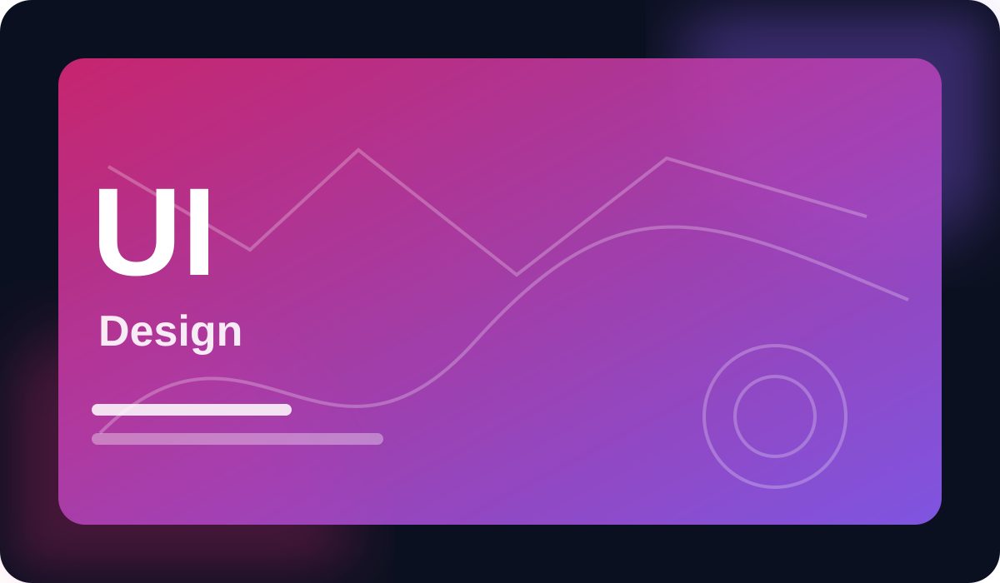

Python for Practical Problem Solving
Build confident Python fundamentals through practical projects, data exercises, and clear problem-solving patterns.
$59$89
LearnFlow combines practical courses, focused learning paths, projects, and progress tools so your next skill actually becomes useful.
Build confident Python fundamentals through practical projects, data exercises, and clear problem-solving patterns.

Learn a complete analytics workflow: framing questions, cleaning data, visualization, and communicating decisions.
Create responsive, accessible websites with semantic HTML, modern CSS, and useful JavaScript interactions.

Turn research and interface patterns into scalable components, flows, prototypes, and polished design systems.

Use positioning, customer research, prioritization, and metrics to shape stronger digital products.
Understand AI concepts, prompt workflows, evaluation, responsible use, and practical automation without hype.
Short explanations, guided practice, projects, and checkpoints keep learning active instead of passive.
Progress, streaks, milestones, quiz feedback, and certificates turn effort into visible progress.
Curated learning paths remove the guesswork when one course is not enough to reach a real goal.
“The Python path finally made practice feel structured. I stopped hopping between random tutorials and actually built projects.”
“The lessons are concise, but the projects force you to apply the idea. That balance worked well for me.”
“I use the dashboard to plan three short sessions each week. It feels much easier to stay consistent.”
Choose a course, set a weekly goal, and let LearnFlow help you turn small sessions into measurable progress.